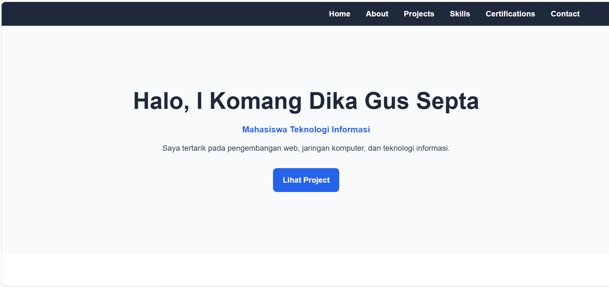
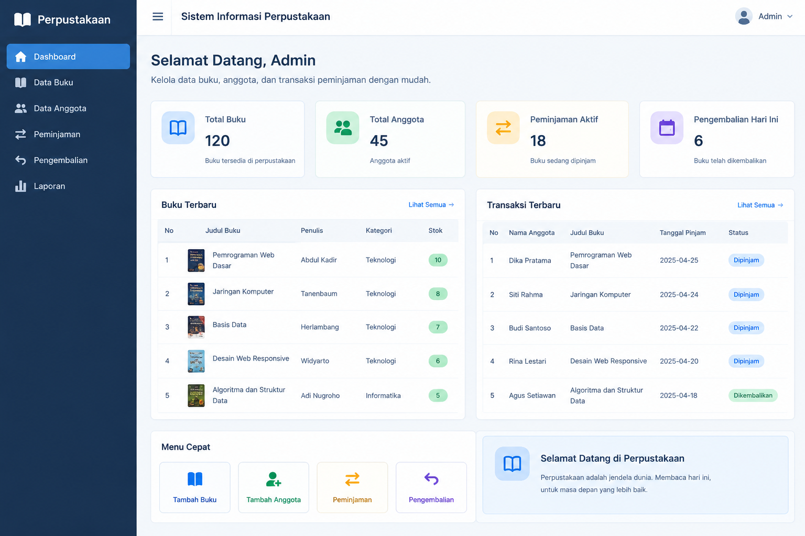
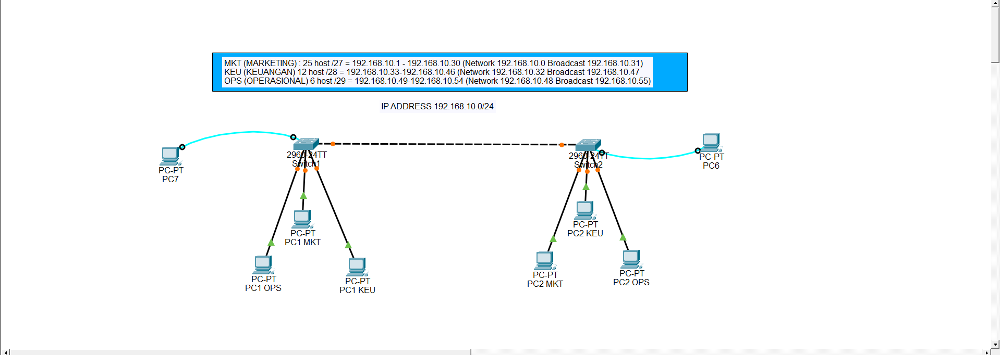

Website Portfolio
Website portfolio sederhana yang dirancang untuk menampilkan profil, kemampuan, dan project yang pernah dibuat.
Teknologi: HTML5, CSS3
Lihat ProjectWELCOME TO MY PORTOFOLIO
Mahasiswa Teknologi Informasi yang tertarik pada web development, jaringan komputer, dan teknologi informasi.
Lihat ProjectSaya adalah mahasiswa Teknologi Informasi yang memiliki ketertarikan dalam pengembangan website dan jaringan komputer.
Saat ini saya sedang mengembangkan kemampuan dalam HTML, CSS, JavaScript, Git, database, serta dasar-dasar jaringan komputer.
Saya senang mempelajari teknologi baru dan mencoba menerapkannya melalui berbagai project sederhana.

Website portfolio sederhana yang dirancang untuk menampilkan profil, kemampuan, dan project yang pernah dibuat.
Teknologi: HTML5, CSS3
Lihat Project
Konsep sistem informasi sederhana yang digunakan untuk membantu pengelolaan data buku dan anggota perpustakaan.
Teknologi: HTML, CSS, JavaScript
Lihat Project
Simulasi jaringan komputer yang mencakup konfigurasi perangkat, IP address, VLAN, dan routing.
Teknologi: Cisco Packet Tracer
Lihat ProjectMembuat struktur halaman website menggunakan HTML5 dan elemen semantik.
Membuat tampilan website menggunakan CSS, Flexbox, Grid, dan responsive design.
Mempelajari dasar pemrograman JavaScript dan interaksi pada halaman web.
Menggunakan Git untuk mengelola versi kode dan GitHub untuk menyimpan project.
Mempelajari dasar jaringan komputer, IP address, subnetting, VLAN, dan routing.
Mempelajari dasar database, SQL, tabel, dan pengelolaan data.
Mempelajari dasar pengembangan website menggunakan HTML, CSS, dan JavaScript.
Mempelajari dasar jaringan komputer yang meliputi IP address, subnetting, VLAN, dan routing.
Mempelajari penggunaan Git untuk mengelola versi kode serta GitHub untuk menyimpan project.
Silakan terhubung dengan saya melalui jejaring profesional berikut.